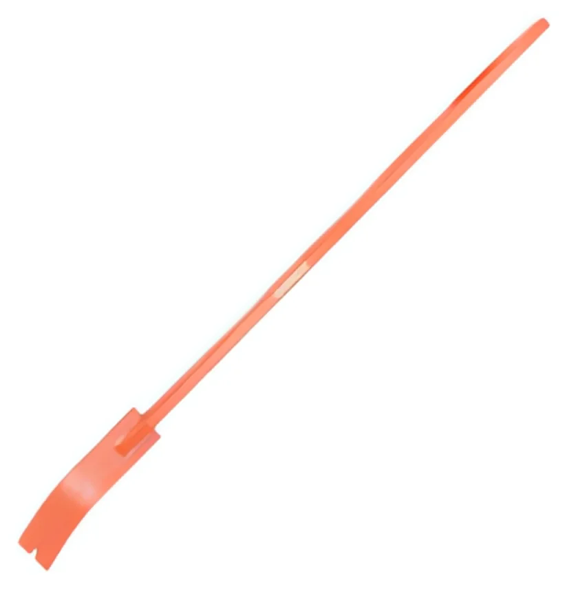

GROZ · Striking Tools
Construction Bars Heavy Duty
CAT NR HDPR/46 · ORD NR 33140
| CAT NR (catalogue number) | HDPR/46 |
|---|---|
| ORD NR (order number) | 33140 |
| Box quantity | 2 |
| Blade thickness (inch) | 0.27 |
| Blade thickness (mm) | 7 |
| Blade width (inch) | 3.35 |
| Blade width (mm) | 85 |
| Handle cross section (inch) | 1-1/2 x 1 x 0.078 |
| Handle cross section (mm) | 38 x 25 x 2 |
| Length (inch) | 46 |
| Length (mm) | 1170 |
| Weight (kgs) | 3.1 |
| Weight (lbs) | 6.85 |
Ask for a quote The catalogue PDF, page 71
“Ask for a quote” opens this product in the catalogue: add it to your quote and send it. Buyers from Africa, the Gulf and worldwide are welcome; prices in USD, EUR or INR.
From the GROZ Workshop Tools CB-05 catalogue. Not yet verified: these details were read from the printed catalogue automatically; check the catalogue page before ordering.